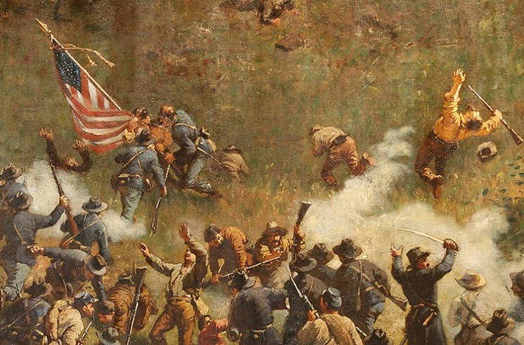

Американская революция
Тип:
Революция
Время:
1765-1783
Революция
(англ. American Revolution) — колониальное восстание (в марксистской традиции - буржуазная революция), произошедшее между 1765 и 1783 годами на территории британских колоний Северной Америки. Будучи в военном союзе с Францией, колонисты одержали сокрушительную для метрополии победу в Войне за независимость (1775—1784), главнейшим итогом которой стало провозглашение Соединённых Штатов Америки и признание их полной и безоговорочной независимости британской короной. Континентальным конгрессом 1765 года, образованным по причине принятия в том же году Акта о гербовом сборе, был объявлен принцип «нет налогам без представительства», который отвергал полномочия английского парламента облагать колонии любым налогом по причине отсутствия представителей последних в данном руководящем органе. Подобные протесты упорно множились вплоть до Бостонской бойни (1770) и сожжения британского таможенного судна «Гаспи» (англ. Gaspee) близ Род-Айленда (1772). За этими двумя событиями последовало ещё одно — не менее значимое — Бостонское чаепитие (1773). Ответом британской стороны стало закрытие гавани Бостона и принятие ряда карательных мер в отношении колонии Массачусетского залива, фактически аннулировавших её право на самоуправление. Однако другие колонии начали сплачиваться вокруг Массачусетса, и уже в конце 1774 года на Континентальном конгрессе группа колониальных лидеров установила своё собственное правительство с целью скоординировать будущее сопротивление Великобритании; другая же часть населения продолжала хранить верность короне, получив название лоялистов или тори. Напряжение в американо-британских отношениях достигло своего пика 19 апреля 1775 года, когда солдаты короля Георга попытались уничтожить припасы колониальных войск в Лексингтоне и Конкорде. Впоследствии конфликт перерос в войну, в которой американцы (а затем и их французские союзники) сражались с англичанами и лоялистами в так называемой Войне за независимость (англ. American Revolutionary War или American War of Independence). В каждой из тринадцати колоний были сформированы свои Провинциальные конгрессы (англ. Provincial Congresses), перенявшие власть бывшего колониального правительства и подавлявшие лоялистские настроения. Ими же была набрана Континентальная армия во главе с генералом Дж. Вашингтоном. 2 июля 1776 года конгресс объявил Георга III тираном, который растоптал всякое право колонистов как англичан (то есть как своего народа). Также конгрессом была провозглашена свобода и независимость колоний. Континентальная армия выгнала английских солдат из Бостона в марте 1776 года, но тем же летом и до конца войны потеряла Нью-Йорк и его стратегически важную гавань. Британский Королевский флот оккупировал порты и на короткое время захватывал американские города, однако британцам не удалось разбить армию Вашингтона. Зимой 1775—1776 годов ополченцы попытались вторгнуться в Канаду чтобы подчинить себе британскую провинцию Квебек, а также присоединить франкоканадцев к участию в войне на стороне тринадцати колоний. Кампания не увенчалась успехом, однако в октябре 1777 года американцами была выиграна битва при Саратоге. Франция вступила в войну в качестве союзника США, располагая при этом большой армией и флотом. Военные действия перенеслись на территорию южных штатов, где Чарльз Корнуоллис в 1780 году осадил Чарлстон и принудил к капитуляции армию генерала Линкольна; но ему не удалось привлечь достаточно добровольцев из числа лоялистов для эффективного контроля над территорией. Наконец, осенью 1781 года объединённые американские и французские силы окружили Корнуоллиса в Йорктауне. Капитуляция Корнуоллиса фактически положила конец войне. Парижский мир был подписан 3 сентября 1783 года, закончив войну и подтвердив полное отделение новой нации от Британской империи. Соединённые Штаты овладели почти всей территорией к востоку от реки Миссисипи и к югу от Великих озёр, при этом британцы сохранили контроль над Канадой, а Испания захватила Флориду. Среди результатов революции следует отметить создание Конституции США и создание относительно сильного федерального правительства, разделённое на три ветви: законодательную, исполнительную и судебную. Революция также привела к массовой миграции около 60 000 лоялистов в прочие британские земли, особенно в Канаду.
Источники:
wikipedia.org;